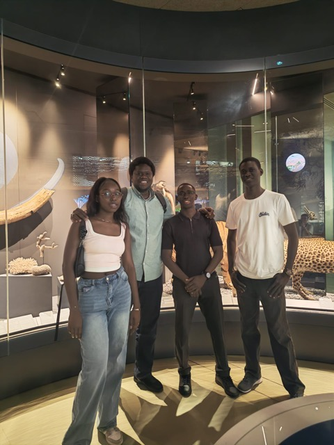
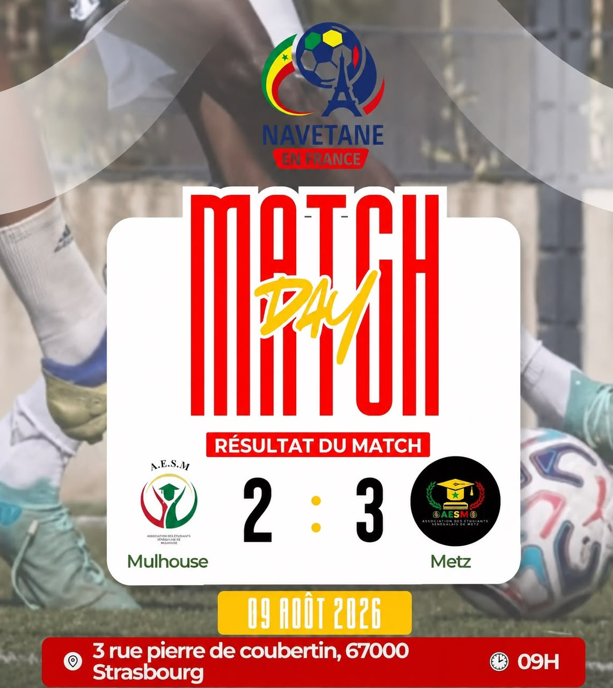

L’AESM visite le musée de la Cour d’Or
Une sortie culturelle à Metz pour découvrir le musée et partager un moment entre membres.
Lire l’articleVie associative
L’AESM a choisi le plan d’eau de Metz pour deux rendez-vous de plein air, les 21 juin et 26 juillet 2026. Deux dates, un même objectif : sortir du cadre des réunions, prendre le temps de se retrouver et accueillir les étudiants autour d’un moment simple et convivial.
Le premier pique-nique a mêlé repas partagé et activités en équipe : chasse au trésor — le Langaburi —, blind test musical, devinettes, relais et jeux d’observation. La journée s’est ensuite prolongée par un rassemblement pour aller profiter de la fête de la musique.
Le second rendez-vous a repris la même idée de partage au bord de l’eau. Chacun pouvait apporter quelque chose à mettre en commun, puis les échanges et les jeux ont continué au Saulcy avec une soirée consacrée aux jeux de société.
Ces deux pique-niques rappellent que la vie associative se construit aussi dans ces moments informels : une partie de football, un jeu improvisé, une discussion au bord de l’eau ou un repas partagé peuvent suffire à créer de nouveaux liens.
À lire aussi

Une sortie culturelle à Metz pour découvrir le musée et partager un moment entre membres.
Lire l’article
Une victoire de Metz dans le tournoi Navétane en France.
Lire l’article